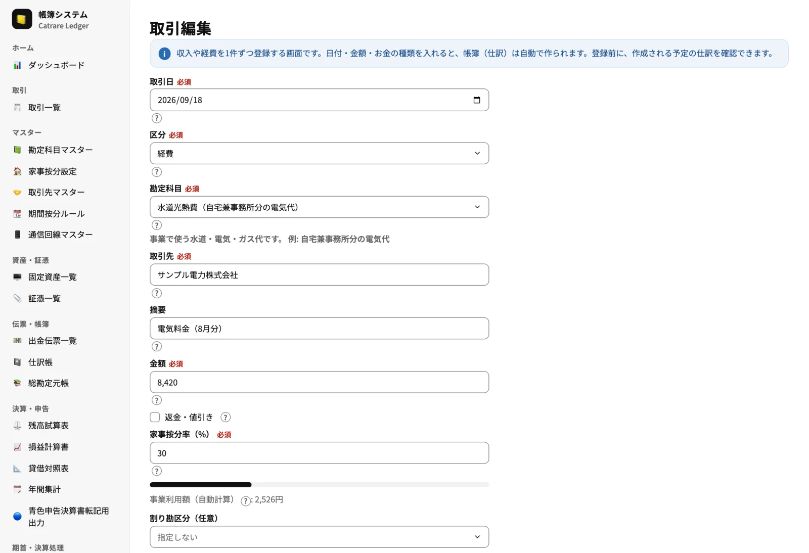
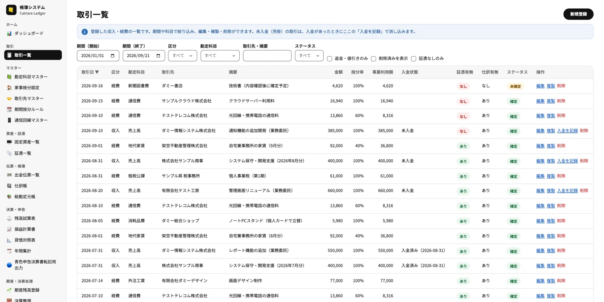
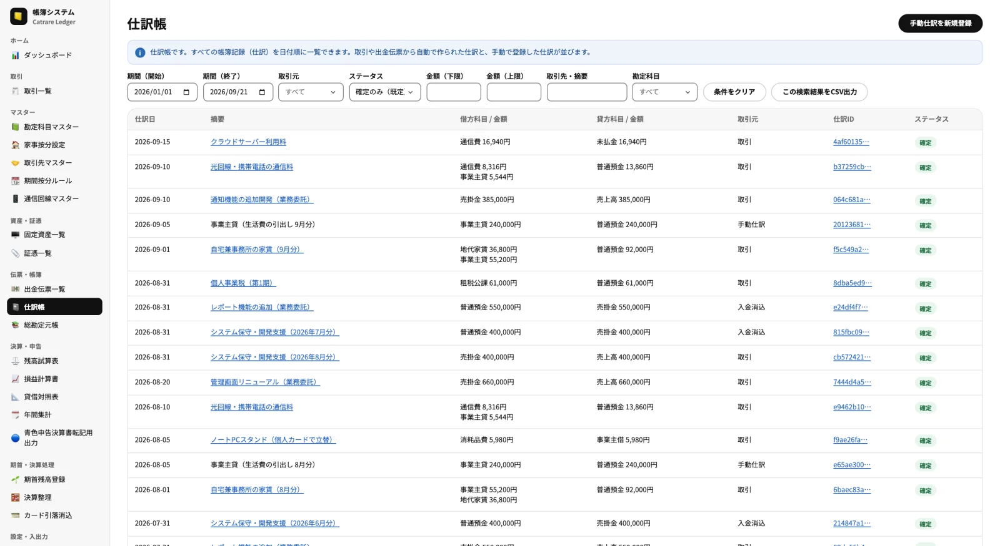
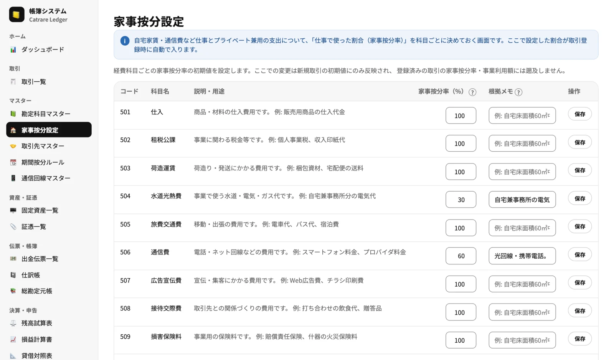
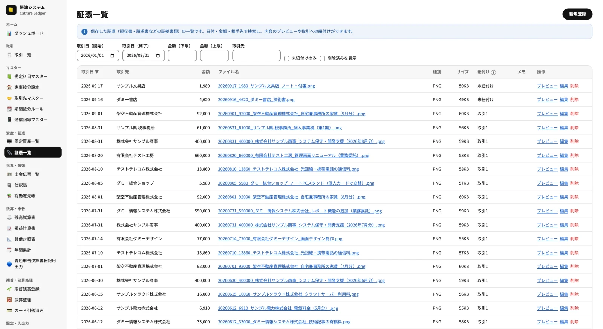
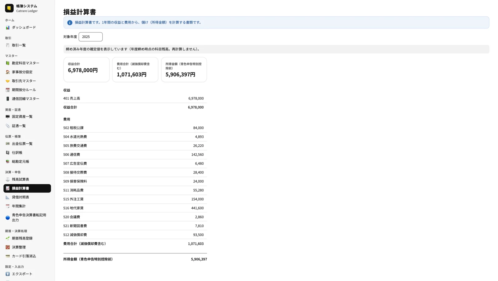
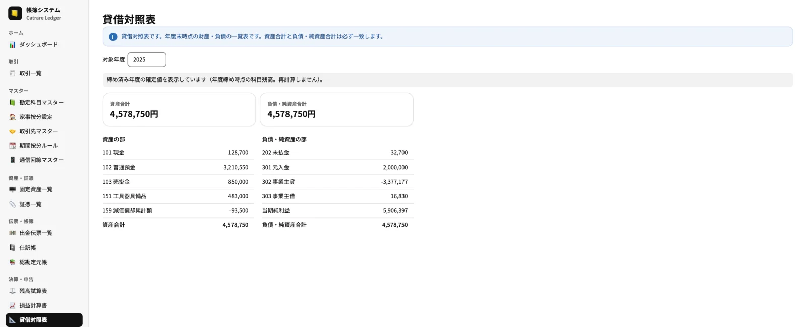
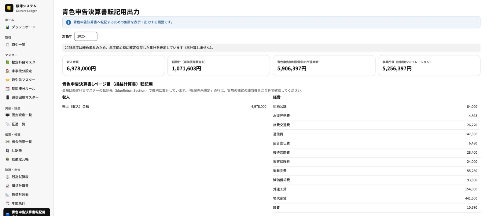
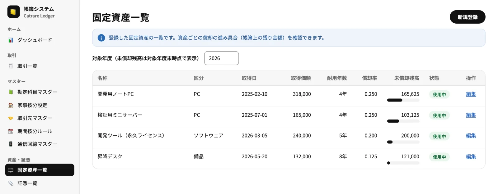

Web App
LEDGER帳簿システム
個人事業主・フリーランスのための、ブラウザで使う帳簿システムです。収入・経費を簡単な入力で記録すると、複式簿記の仕訳が自動で作られ、損益計算書・貸借対照表・青色申告決算書の転記用データまで出力できます。データはお使いのブラウザ内だけに保存され、サーバーには送信されません。
- 無料
- インストール不要
- データは端末内のみ
- 白色申告・青色申告に対応

Features
記帳から申告用の集計まで。
かんたん入力・自動仕訳
収入・経費・資産・証憑を、借方・貸方を意識せずに登録できます。内部では複式簿記の仕訳を自動で作り、借方と貸方の合計が必ず一致する状態を保ちます。
家事按分
自宅家賃・通信費など、仕事とプライベート兼用の支出を科目ごとの按分率で自動計算。期間ごとに按分率を切り替えるルールや、通信回線ごとの按分にも対応します。
証憑管理・出金伝票
領収書・請求書などの証憑を取引に紐付けて保存し、日付・金額・取引先で検索できます（電子帳簿保存法を意識した設計）。領収書のない支出は出金伝票で記録・印刷できます。
固定資産・減価償却
備品などを固定資産として登録すると、取得日・取得価額・申告方式（白色／青色）に応じて経費化の方法の候補を画面が判定し、注意点とあわせて表示します。減価償却費の計算と未償却残高の推移も自動で管理します。適用の可否は最終的に国税庁の資料・税務署・税理士でご確認ください。
帳簿・帳票の出力
仕訳帳・総勘定元帳・残高試算表・損益計算書・貸借対照表・年間集計を表示。白色申告の収支内訳書や青色申告決算書へ転記するための集計を出力できます。
年度締め・バックアップ
決算整理と年度締めで1年分の帳簿を確定（締め後は編集不可）。JSONバックアップ（パスフレーズ暗号化も選択可）でいつでも復元でき、操作ログも確認できます。
カード引落消込・入金管理
クレジットカードの利用と口座引落を突き合わせて消し込み、売掛金の入金も記録できます。
取り込み・出力
取引のCSV取込、帳簿・集計のCSV/JSON出力に対応。WORKBILL で確定した請求データも取り込めます。
画面ガイド・用語集
画面ごとの説明、入力欄のヒント、用語集を用意し、簿記に不慣れでも迷いにくくしています。
Screens
実際の画面をご覧ください。
掲載している画面は、架空の個人事業主「サンプル太郎」のダミーデータです（取引先名・金額はすべて架空のものです）。
日付・金額・按分率を入れるだけ
収入・経費を1件ずつ登録する画面です。日付・勘定科目・取引先・金額を入れると、帳簿（仕訳）は自動で作られます。家事按分率を入れると、事業で使った分の金額（事業利用額）を自動で計算します。
- 登録前に、作成される仕訳を確認できます
- 勘定科目ごとの按分率が初期値として入ります

取引を一覧で確認・絞り込み
登録した収入・経費を、期間・区分・勘定科目・取引先で絞り込めます。家事按分率と事業利用額、入金状態、証憑の有無、確定状態が一覧で分かります。
- 未入金（売掛）の取引は、入金があったときに消し込み
- 編集・複製・削除は一覧から（削除は論理削除）

仕訳は自動で作られる
取引から自動で作られた仕訳、入金消込、カード引落、手動仕訳が、仕訳帳に日付順に並びます。家事按分のある取引は、事業分と事業主貸に自動で分けて記録されます。
- 借方と貸方の合計が一致しない仕訳は保存できません
- 検索結果はCSVで出力できます

家事按分を科目ごとに設定
自宅家賃や通信費など、仕事とプライベート兼用の支出の按分率を科目ごとに決めておきます。根拠のメモも残せて、取引登録のたびに自動で反映されます。
- 期間ごとに按分率を切り替えるルール（活動状況の変化に対応）
- 複数回線の通信費は回線ごとに按分

証憑を取引に紐付けて保存
領収書・請求書などの証憑を、推奨ファイル名（日付_金額_取引先_内容）で保存し、取引と紐付けて管理します。日付・金額・取引先で検索でき、取引に紐付いていない証憑もすぐ見つかります。
- プレビュー・編集・削除は一覧から
- 証憑が付いていない確定済み取引はダッシュボードで警告

Reports
帳簿と申告用の出力




Tech Stack
ブラウザだけで完結する構成です。
| 実行方式 | ブラウザで動く静的Webアプリ（サーバー処理なし）。GitHub Pages で配布 |
|---|---|
| フロントエンド | TypeScript ／ React 19 ／ Vite ／ React Router（HashRouter） |
| UI | Tailwind CSS v4 ／ shadcn/ui（Base UI）を土台にした共通UIパッケージ ／ Noto Sans JP（自己ホスト）／ Recharts（グラフ） |
| データ保存 | IndexedDB（Dexie.js）。すべてブラウザ内に保存し、サーバーへは送信しません |
| 状態管理・検証 | Zustand ／ Zod（入力・バックアップの検証） |
| 日付・CSV | date-fns ／ PapaParse |
| 暗号化 | Web Crypto API（バックアップのパスフレーズ暗号化） |
| テスト・品質 | Vitest（単体テスト）／ Playwright（E2E）／ Biome（Lint・Format） |
| 開発体制 | pnpm モノレポで WORKBILL・LEDGER と UI 部品を共有し、設計書を正としてテスト駆動で段階的に開発しています。 |
ローカルファースト
帳簿データはお使いのブラウザのIndexedDBにだけ保存し、ネットワークへは送信しません。バックアップファイルで別の端末へ移せます。
複式簿記の整合性
仕訳は借方と貸方の合計が一致しなければ保存できません。金額は整数（円）で扱い、削除はすべて論理削除、締め済みの年度は編集できません。
安全な出力
印刷用の帳票はReactコンポーネントで描画し、CSV出力にはインジェクション対策を入れています。
設計書ファースト
実装の前に設計書とテストケースを整え、テスト駆動で段階的に開発しています。
Notes
ご利用にあたって
本システムは記帳・集計を補助するツールで、税務判断を自動化するものではありません。家事按分率・資産計上・減価償却・青色申告特別控除の適用などは、国税庁の資料、税務署、税理士等でご確認ください。
データはお使いのブラウザにだけ保存されます。ブラウザのデータ削除や端末の変更で失われることがあるため、設定画面から定期的にバックアップを保存してください。
PCのブラウザでの利用を想定しています。
LEDGER を使ってみる
登録・ログインは不要です。ブラウザで開くとすぐに使えます。初めて開いたときは空の状態です。